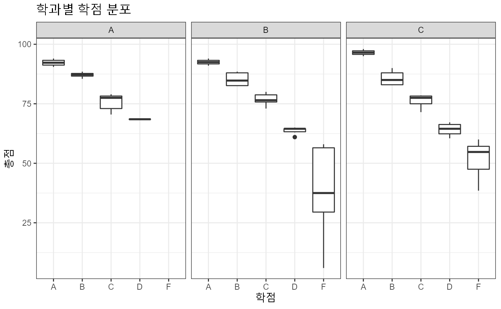
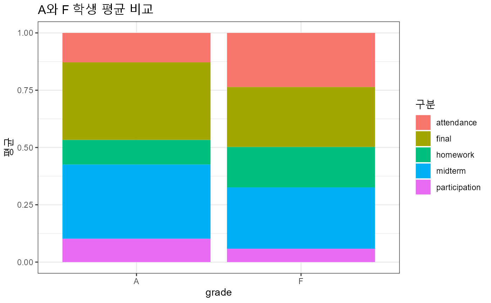

exam_score.Rmd
library(bitData)
#> Warning: replacing previous import 'jsonlite::flatten' by 'purrr::flatten' when
#> loading 'bitData'
#>
#> Attaching package: 'bitData'
#> The following object is masked from 'package:datasets':
#>
#> co2
library(tidyverse)
#> ── Attaching packages ─────────────────────────────────────── tidyverse 1.3.1 ──
#> ✔ ggplot2 3.3.6 ✔ purrr 0.3.4
#> ✔ tibble 3.1.8 ✔ dplyr 1.0.10
#> ✔ tidyr 1.2.1 ✔ stringr 1.4.1
#> ✔ readr 2.1.2 ✔ forcats 0.5.2
#> Warning: package 'tibble' was built under R version 4.2.1
#> Warning: package 'tidyr' was built under R version 4.2.1
#> Warning: package 'dplyr' was built under R version 4.2.1
#> Warning: package 'stringr' was built under R version 4.2.1
#> Warning: package 'forcats' was built under R version 4.2.1
#> ── Conflicts ────────────────────────────────────────── tidyverse_conflicts() ──
#> ✖ dplyr::filter() masks stats::filter()
#> ✖ dplyr::lag() masks stats::lag()| Name | Piped data |
| Number of rows | 72 |
| Number of columns | 8 |
| _______________________ | |
| Column type frequency: | |
| character | 1 |
| numeric | 7 |
| ________________________ | |
| Group variables | None |
Variable type: character
| skim_variable | n_missing | complete_rate | min | max | empty | n_unique | whitespace |
|---|---|---|---|---|---|---|---|
| department | 0 | 1 | 1 | 1 | 0 | 3 | 0 |
Variable type: numeric
| skim_variable | n_missing | complete_rate | mean | sd | p0 | p25 | p50 | p75 | p100 | hist |
|---|---|---|---|---|---|---|---|---|---|---|
| id | 0 | 1 | 36.50 | 20.93 | 1 | 18.75 | 36.50 | 54.25 | 72 | ▇▇▇▇▇ |
| year | 0 | 1 | 2.11 | 0.62 | 1 | 2.00 | 2.00 | 2.00 | 4 | ▁▇▁▁▁ |
| attendance | 0 | 1 | 11.65 | 1.19 | 4 | 12.00 | 12.00 | 12.00 | 12 | ▁▁▁▁▇ |
| participation | 0 | 1 | 5.89 | 3.17 | 0 | 2.00 | 6.00 | 9.00 | 10 | ▇▂▆▇▇ |
| homework | 0 | 1 | 9.29 | 2.10 | 0 | 10.00 | 10.00 | 10.00 | 10 | ▁▁▁▁▇ |
| midterm | 0 | 1 | 22.16 | 6.81 | 0 | 18.00 | 22.85 | 27.50 | 33 | ▁▁▅▇▆ |
| final | 0 | 1 | 23.60 | 7.54 | 0 | 19.75 | 25.75 | 29.00 | 34 | ▁▁▃▅▇ |
exam_score <- exam_score %>%
mutate(total = attendance + participation + homework + midterm + final) %>%
mutate(grade = case_when( total > 90 ~ "A",
total > 80 & total <= 90 ~ "B",
total > 70 & total <= 80 ~ "C",
total > 60 & total <= 70 ~ "D",
TRUE ~ "F"))
exam_score %>%
ggplot(aes(x = grade, y = total)) +
geom_boxplot() +
facet_wrap(~department) +
labs( title = "학과별 학점 분포",
x = "학점",
y = "총점") +
theme_bw(base_family = "AppleGothic")
two_grades <- exam_score %>%
filter(grade %in% c("A", "F"))
two_grades %>%
count(grade)
#> # A tibble: 2 × 2
#> grade n
#> <chr> <int>
#> 1 A 8
#> 2 F 13
two_grades %>%
pivot_longer(cols = attendance:final,
names_to = "구분",
values_to = "점수") %>%
group_by(grade, 구분) %>%
summarise(평균 = mean(점수)) %>%
ggplot(aes(x = grade, y = 평균, fill = 구분)) +
geom_col(position = "fill") +
theme_bw(base_family = "AppleGothic") +
labs(title = "A와 F 학생 평균 비교")
#> `summarise()` has grouped output by 'grade'. You can override using the
#> `.groups` argument.